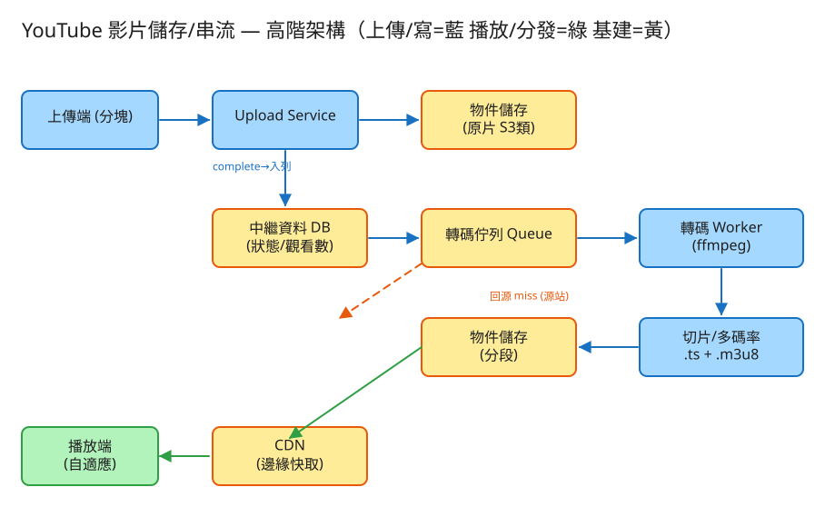

⑩ YouTube 影片平台 · 初學者友善版
D 串流計算/儲存分發
看故事就懂
輕鬆讀 28 分鐘
🧠 這份怎麼讀？
這份用「大腦比較好吸收」的方式重寫：先講生活比喻 → 把系統拆成小關卡 → 邊讀邊考自己。
分成兩部分：Part 1 概念（這系統在幹嘛）、Part 2 工程細節（怎麼真的蓋出來，一樣白話）。
遇到 💭 停一下 就先自己想 3 秒再往下看——這叫「提取練習」，比一直往下滑記得更牢。
1. 60 秒搞懂它在幹嘛
想像你開一家超大型的「影片餐廳」：每天有 50 萬人拿著一大盒生影片走進廚房，
說「幫我收好、煮好、隨時讓全世界幾十億人點來看」。你要做的就是：把生影片收進來、煮成各種份量、放到離客人最近的點，讓任何人按下播放就能順順地看。
它的難，難在四件事：影片檔超大（好幾 GB）、看的人比傳的人多上千倍、要全世界都不卡、還要省到爆的儲存成本。
🔑 一句話
YouTube = 一座全球連鎖的影片中央廚房：生影片分箱收進來 → 煮成大中小份 → 鋪到離你最近的分店冰箱 → 你按播放就立刻有得看。
2. 為什麼影片不能「整支直接傳、直接看」？
很多人第一個疑問是：「不就上傳一個檔、然後點開來看嗎？哪有那麼難？」關鍵在兩個你早就有的生活經驗——
📦 經驗一：搬家不會「整個家一次扛」
搬家時你不會把整個房子一次搬走，而是分箱搬。萬一中途有一箱掉了，你只要重搬那一箱，不用整個家重來。
影片好幾 GB，傳到一半斷線是家常便飯——所以也要切成小塊一塊一塊傳，斷了只補那一塊。
🍜 經驗二：同一道菜要出「大中小份」
一家好餐廳的招牌菜，會準備大份、中份、小份，客人胃口大就上大份、小孩就上小份。
影片也一樣：你家 Wi-Fi 飛快就給你 1080p（大份），手機跑 4G 訊號差就給你 480p（小份）——這樣才不會一直轉圈圈。
所以這題的本質是：把「一支大生影片」變成「能斷點續傳的小塊」收進來，再煮成「多種份量」鋪到全世界，讓每個人都拿到最適合自己的那一份。
「上傳收影片」和「全世界看影片」其實是兩件完全分開的事，中間靠「煮」（轉碼）這道工序接起來。
💭 停一下：為什麼「煮影片」（轉成各種畫質）不能讓上傳的人站在那邊等煮完？
看答案
因為煮一支影片（轉成 240p/480p/720p/1080p/4K 還要切片）很花時間，可能要好幾分鐘甚至更久。如果讓上傳的人一直等，體驗超差、伺服器也被卡住。
正確做法是：收到影片就先說「收到了！」放他走，然後在背景慢慢煮——煮好一種畫質就先能看一種。這叫「非同步、邊煮邊上菜」。
3. 把系統拆成 4 個關卡
別被「影片平台」嚇到。整件事其實就是闖 4 關，一關一關來：
1收影片：大檔分箱搬進來
使用者那支好幾 GB 的影片要傳上來。直接整支傳，傳到一半斷線就要從頭再來，太痛苦。
📦 比喻：搬家分箱搬
把影片切成固定大小的小塊（例如每塊 5MB）一塊一塊傳。哪一塊傳失敗，只補那一塊；全部到齊後再「黏」回完整的一支。這就是分塊上傳 + 斷點續傳。
👉 還有個聰明招：讓影片直接送進「大倉庫」（物件儲存），不要經過我們的伺服器中轉——不然幾 GB 的流量會把伺服器壓垮。我們只負責發一張「臨時通行證」叫客戶端自己搬進倉庫。
2煮影片：把生影片轉成大中小份（轉碼）
生影片進來了，但它只有「原始一種畫質」。我們要把它煮成多種畫質、多種檔案大小，並且切成一小段一小段。
🍜 比喻：同一道菜出大中小份
就像中央廚房把一鍋食材分裝成大中小份，影片轉碼也把原片轉成 240p / 480p / 720p / 1080p / 4K 等多種版本，
讓不同網速、不同裝置的人都有對的那一份可拿。這道「煮」的工序就叫轉碼（transcode）。
而且煮的時候先把小份煮好（240p 最快），使用者就能先看著低畫質，高畫質陸續補上——這叫「漸進可用」，不用等全部煮完才開飯。
3看影片：網路差就自動換小份（自適應串流）
你看影片時，網路不會一直穩定——進電梯、走出店門，網速忽快忽慢。畫質要是不會變，網速一掉就一直轉圈圈。
🚰 比喻：水管細就轉小水流
想像影片是水。水管粗（網路快）就放大水流（高畫質）；水管變細（網路慢）就自動轉小水流（低畫質），水照樣源源不絕流出來，不會斷。
播放器每播一小段就重新看一次網速、決定下一段拿哪種畫質——這叫HLS 自適應串流。
怎麼做到的？影片被切成很多 6 秒的小段，外加一張菜單（manifest）列出「有哪些畫質、各在哪裡」。播放器照菜單，這一段拿 720p、下一段網速掉了就拿 480p，無縫接上。
4送到你面前：放在離你最近的倉庫（CDN）
全世界幾十億人看影片。如果大家都連到「總倉庫」（在美國某處），台灣的你每抓一段都要繞半個地球，又慢又會把總倉庫擠爆。
🏪 比喻：便利商店就開在你家巷口
你不會為了買瓶水跑去工廠總部，而是去巷口的便利商店——因為熱門商品早就鋪貨到離你最近的分店了。
影片也一樣：把熱門影片先複製一份放到離你最近的「邊緣倉庫」（CDN），你一播放就從巷口拿，又快又不會擠爆總倉庫。
因為每個 6 秒小段都是固定不變的檔案，便利商店可以放心長期囤著（長 TTL 快取），命中率超高，總倉庫幾乎不會被打到。
✅ 四關一句話
① 影片分箱搬進來 → ② 煮成大中小份 → ③ 看的時候網路差就換小份 → ④ 放到離你最近的巷口倉庫。就這樣。
4. 設計時最怕的 3 件事
工程上的「取捨」聽起來很抽象。換個方式記：這個系統最怕三件事，每個設計都是為了避開某個「怕」。
😱 怕「看的人卡住」
看影片的人比上傳的人多上千倍，而且「按下播放要立刻有畫面、不能轉圈圈」是體驗生死線。
所以整個設計圍著「看」轉：自適應串流防卡頓、CDN 放巷口降延遲、首段（開頭那一段）要特別快。讀路徑壓倒一切。
😱 怕「儲存與頻寬燒錢燒到破產」
每天進 50 萬支影片、又煮成好幾種畫質，一年儲存量是幾百 PB（天文數字）；幾十億人同時看，出向頻寬是 Tbps 級。
所以兩條鐵則：影片本體放便宜的大倉庫（物件儲存）、冷門影片轉去更便宜的「冷凍庫」；流量靠 CDN 扛掉 99%，總倉庫只服務沒命中的零頭。不省會破產。
😱 怕「上傳一爆量就把廚房塞爆」
煮影片很吃 CPU/GPU。如果某時段大家一起上傳，轉碼機器會被瞬間塞爆。
所以上傳完成後不直接煮，而是先把任務排進佇列（排隊單），由一群「煮飯工人」照自己步調慢慢消化——上傳暴衝也不會壓垮廚房。排隊削峰，別硬扛。
5. 一張圖看懂

✏️ 用 Excalidraw 開啟編輯（diagram.excalidraw）
白話導讀，跟著影片的旅程走一遍：
- 📤 上傳端把影片切成小塊，直接搬進 🏬 大倉庫（物件儲存）放原片 →
- 📋 收齊後丟進 轉碼佇列（排隊單）→
- 👨🍳 轉碼工人（ffmpeg）把原片煮成多種畫質、切成小段，存回大倉庫，並把「煮到哪了」記到 🗄️ 中繼資料 DB →
- 🏪 CDN 巷口倉庫把熱門小段就近快取 →
- 📱 播放端先拿一張菜單（master.m3u8），再依網速一段一段挑畫質拉來看（沒命中才回總倉庫補貨）。
6. 名詞白話翻譯
看完上面，這些詞你其實都已經懂了，這裡只是把「工程術語 ↔ 白話」對起來，Part 2 會用到：
| 工程術語 | 白話解釋 |
|---|
| 分塊上傳 / 斷點續傳 | 搬家分箱搬：掉哪箱補哪箱，不用整個重來 |
| 轉碼（transcode） | 把生影片「煮」成大中小份多種畫質 |
| rendition（轉碼產物） | 同一支影片煮出來的某一種「份量」（如 720p 那一版） |
| 切片 / segment | 把影片剁成一段一段（如 6 秒一段的 .ts 檔） |
| HLS / 自適應串流 / ABR | 水管細就轉小水流：依網速自動換畫質 |
| manifest（.m3u8） | 影片的「菜單」：列出有哪些畫質、各在哪裡 |
| 物件儲存（S3 類） | 放影片本體的「超大便宜倉庫」 |
| CDN / 邊緣 | 開在你家巷口的「分店倉庫」，就近供貨 |
| 回源 / origin | 巷口沒貨時，跑回「總倉庫」補貨 |
| 佇列（Queue） | 排隊的待辦清單，工人從前面一個個拿來做 |
| 狀態機 | 影片的進度燈：排隊中 → 煮中 → 可看了 |
| 非同步 / 202 Accepted | 「收到了，後面慢慢處理」，不讓你站著等 |
| 冷熱分層 | 熱門片放快取手邊、冷門片塞進便宜冷凍庫 |
| QPS / 讀寫比 | 每秒幾筆請求；看的次數 ÷ 上傳次數（這題上千:1） |
🛠️ Part 2 ｜ 工程細節（一樣白話）
概念懂了，來看「真的要動手蓋，得想清楚哪些事」。一樣用比喻，不用怕。
7. 要準備多大？（規模估算）
🍱 比喻：開餐廳前先估翻桌率
開餐廳前你會先估「一天進多少貨、坐多少客人」，才決定租多大冷凍庫、請幾個廚師。
系統設計也一樣：先估數字，才知道要準備多大的「料」。這一步叫規模估算。
我們估幾個關鍵數字（數字不必背，重點是感受它的「形狀」）：
| 估什麼 | 大概數字 | 所以呢？ |
|---|
| 每天進多少影片（寫） | 50 萬支，約每秒 6 支（峰值 ~18） | 上傳其實很少，不是瓶頸 |
| 每天看多少次（讀） | 50 億次播放，約每秒 5.8 萬（峰值 ~17 萬） | 看的人爆量，設計要圍著「看」轉 |
| 原片要存多少 | 每支 ~1GB → 一年約 180 PB | 影片本體只能放便宜大倉庫，不能塞 DB |
| 加上多畫質副本 | 再放大約 2.5 倍 → 數百 PB/年 | 非省成本不可（冷熱分層） |
| 對外吐多少頻寬 | 峰值 Tbps 級 | 總倉庫扛不住 → 必須靠 CDN 卸載 |
🔑 關鍵洞察：看的人是上傳的上千倍
這系統「寫很少、讀爆量」，讀寫比可達數千比一。所以重點不是怎麼收影片（那很輕鬆），
而是怎麼讓幾十億次播放都不卡、又不燒爆頻寬與儲存——答案就是 CDN + 物件儲存兩條主線。
💭 停一下：為什麼「影片本體」不能直接存進資料庫（DB）？
看答案
因為影片是 PB 級的超大二進位檔，塞進 DB 會直接把 DB 撐爆、又慢又貴。正確做法是分工：影片本體（bytes）放便宜的物件儲存大倉庫，
DB 只存「指標和進度」——例如「這支影片的檔案放在倉庫哪個位置、煮到哪一步了」。一筆中繼資料才幾 KB，DB 就輕鬆了。8. 系統之間怎麼溝通？（API）
🍔 比喻：點餐單
API 就是兩個系統之間講好的「點餐單格式」：你要點什麼（給我哪些欄位）、我回你什麼。
講好格式，雙方就能合作，不用知道對方廚房怎麼運作。
這題的「點餐單」照影片旅程排：
① 我要上傳影片（先拿「分箱搬運許可」）
POST /uploads
給我：{ 檔名, 大小, 標題 }
我回：{ upload_id, 每塊多大, 一串「直接搬進倉庫」的臨時網址 }
回傳的那串「臨時網址（預簽章 URL）」是關鍵：讓客戶端把每一塊直接搬進大倉庫，不經過我們的伺服器——不然幾 GB 流量會把伺服器壓垮。
② 一塊一塊搬（哪塊掉了補哪塊）
PUT /uploads/{upload_id}/parts/{第幾塊} Body: <這一塊的位元組>
③ 全部到齊了，黏起來開始煮
POST /uploads/{upload_id}/complete
我回：202「收到了！排隊煮中」 ← 立刻回，不讓你等煮完
為什麼「立刻回 202」？因為煮影片要好幾分鐘，不該讓上傳的人站著等。先收下、給張「處理中」的單，後面非同步慢慢煮。就像餐廳收單給你號碼牌，不讓你站在櫃台等餐。
④ 煮到哪了？（看進度燈）
GET /videos/{video_id}
我回：{ 狀態:"TRANSCODING",
各畫質:{ "240p":"好了", "720p":"煮中", "1080p":"排隊中" } }
⑤ 給我菜單，我要看（自適應串流）
GET /videos/{video_id}/master.m3u8 → 一張列出各畫質的菜單
⑥ 我看了一次（觀看數 +1）
POST /videos/{video_id}/view
注意觀看數 +1 是不阻塞播放的：先把 manifest 給你看，計數丟到背景慢慢算。就算計數系統掛了，你照樣能看影片。
9. 系統要記住哪些事？（資料模型）
📒 比喻：兩本筆記本（影片本體不寫進去）
系統要把「指標和進度」記在筆記本（資料表）裡，真正的影片檔放在倉庫。這題主要兩本：
🎬影片簿（這支影片是什麼、煮到哪了）
每支影片一列：影片ID（主鍵）、標題、作者、時長、狀態(排隊/煮中/可看/失敗)、原片在倉庫的位置、觀看數。
為什麼只存「倉庫位置」不存影片？
影片本體是 PB 級大檔，放 DB 會爆。這裡只記一個地址（key），像「原片在倉庫 A 區 3 號櫃」，要拿的時候照地址去倉庫拿——DB 管指標、倉庫管 bytes。
📐畫質簿（這支影片煮出哪些份量）
每支影片的每種畫質一列：影片ID、畫質(240p/480p/720p/1080p)、碼率、狀態(排隊/煮中/好了/失敗)、該畫質的菜單位置、各小段檔案的位置清單。
有了這本，系統就能回答「720p 煮好沒？菜單在哪？小段檔在哪？」——也就能組出給播放器的那張 master.m3u8 菜單。
影片本體去哪了？
原片、各畫質的小段（.ts）、菜單（.m3u8）全部放在物件儲存大倉庫，DB 只存它們的「地址 + 狀態」。觀看事件則丟到 Kafka 背景聚合，跟主庫解耦。
10. 哪裡會塞車、怎麼拓寬？（擴展）
🚗 比喻：找出塞車路段，拓寬它
系統變大時，總有某個環節會先「塞車」。工程師的工作就是找出最會塞的地方，把它拓寬。一個一個看：
| 哪裡會塞車 | 怎麼拓寬 |
|---|
| 上傳大檔佔頻寬、容易斷 | 分塊 + 斷點續傳 + 用臨時網址直傳大倉庫（不經伺服器） |
| 煮影片很吃 CPU、上傳會突然暴衝 | 先排佇列削峰 + 一群無狀態煮飯工人自動增減 + 低畫質先煮 |
| 儲存量是天文數字、很燒錢 | 影片放便宜物件儲存 + 冷熱分層（冷門片塞進更便宜的冷凍庫） |
| 對外頻寬 Tbps 級、總倉庫撐不住 | CDN 巷口倉庫扛掉 99%+，總倉庫只服務沒命中的零頭 |
| 跨洲距離太遠、開頭卡卡 | 多地就近 CDN + 熱門片預先鋪貨到邊緣，開頭那段最快拿到 |
| 觀看數每播一次就寫一筆，寫爆 DB | 觀看事件丟 Kafka 緩衝 + 批次聚合 + 近似計數 |
11. 還有哪些「魚與熊掌」？（取捨）
「Part 1 的三個怕」是核心取捨。這裡補幾個常被面試官追問的：
⚖️ 同步煮 vs 非同步煮
同步＝讓上傳的人等到煮完（等到天荒地老）；非同步＝先回「收到」、背景慢慢煮，低畫質先好先能看（漸進可用）。業界一律選非同步。
⚖️ 全部畫質先煮好 vs 有人要才煮
全煮好＝播放零延遲但很燒儲存/算力；有人要才煮（隨需）＝省儲存但第一個看的人要等。常見折衷：熱門片全煮、冷門長尾片隨需煮。
⚖️ 小段切多長？
切太短（2 秒）＝換畫質快、開頭快，但菜單變大、額外負擔高；切太長（10 秒）＝反之。VOD 常取約 6 秒折衷。
💭 追問：煮影片中途失敗了怎麼辦？
用「狀態機 + 重試」：那一份畫質標成 FAILED，自動重試幾次；還是不行就丟「死信佇列」事後人工檢查。其他已經煮好的畫質照樣能看。💭 追問：怎麼防止有人盜連、偷下載影片？
用「有時效的簽章網址」（過期就失效）+ 把小段加密（AES-128 / Widevine 等 DRM），只有合法播放器拿得到鑰匙解開。💭 追問：HLS 和 DASH 差在哪？要選哪個？
兩者都是「自適應串流」的菜單格式：HLS 是 Apple 生態原生、相容性好；DASH 是開放標準、編碼器無關。實務上常兩種菜單都出（共用同一套小段，只是菜單不同）。12. 動手玩玩看
讀十遍不如玩一遍。這題有一個真的可以跑的小程式，讓你親眼看到「上傳 → 煮 → 出菜單」的完整流程：
# 啟動（在這題的 demo 資料夾裡）
cd demo
php -S localhost:8010 -t public
# 然後瀏覽器打開 http://localhost:8010
- 上傳影片：看它怎麼分塊 → 合併（這就是「分箱搬」）。
- 推進轉碼：盯著各畫質的進度燈 排隊中 → 煮中 → 好了（這就是「煮成大中小份」的狀態機）。
- 取 master.m3u8：看那張菜單長什麼樣（列出各畫質）。
- 觀看 +1：看計數怎麼不阻塞播放地累加。
誠實聲明Demo 不做真正的影片編碼：分塊合併、轉碼狀態機、各畫質流轉、HLS 菜單結構都是真實可執行的系統邏輯，但小段內容是佔位文字，不是真的 H.264 影像。真實系統用 ffmpeg 編碼切片、用 S3 類倉庫放 bytes、用 CDN 全球分發。
13. 考考自己
先不要看答案，自己用講給朋友聽的方式回答看看（講得出來才是真的懂）：
Q1：用「搬家」的比喻，解釋為什麼上傳要分塊？
影片好幾 GB，整支傳到一半斷線就要從頭再來，像整個家一次搬。分塊＝分箱搬：切成小塊一塊塊傳，哪塊掉了只補哪塊，全到齊再黏回完整影片（斷點續傳）。Q2：為什麼一支影片要「煮成多種畫質」？用餐廳比喻說說看。
像招牌菜出大中小份：網路快/大螢幕給 1080p（大份），手機訊號差給 480p（小份），大家都拿到適合自己的那一份，不會一直轉圈圈。這道工序叫轉碼。Q3：「網路差就自動降畫質」是怎麼做到的？（自適應串流）
像水管細就轉小水流。影片切成很多 6 秒小段，外加一張菜單列出各畫質。播放器每播一段就重看一次網速，決定下一段拿哪種畫質，無縫接上，水流不斷。Q4：為什麼要把影片放到「離你最近的倉庫」（CDN）？
幾十億人都連總倉庫會又慢又擠爆。把熱門影片先複製到離你最近的「巷口倉庫」（CDN 邊緣），你一播就近拿，又快又不打爆總倉庫。小段是固定檔，可長期快取、命中率超高。Q5（工程）：上傳完成後為什麼要「立刻回 202」而不是等煮完？
煮影片（轉碼）要好幾分鐘，不該讓上傳的人站著等。先回 202「收到、排隊煮中」，把任務丟佇列，背景非同步慢慢煮，低畫質先好先能看。像餐廳收單給號碼牌。Q6（工程）：為什麼影片本體放「物件儲存」、DB 只存指標？
影片是 PB 級大檔，塞 DB 會爆又貴又慢。分工：物件儲存（便宜大倉庫）放 bytes，DB 只存「檔案在倉庫哪個位置 + 煮到哪一步」這種幾 KB 的指標與狀態。Q7（工程）：這題為什麼說「設計要圍著讀路徑轉」？
因為看的人比上傳的人多上千倍（讀寫比數千:1）。上傳很少不是瓶頸，真正難的是讓幾十億次播放都不卡又不燒爆頻寬——所以重點全押在 CDN 卸載 + 自適應串流 + 首段要快。14. 30 秒回顧
YouTube = 一座全球連鎖的影片中央廚房。
4 個關卡：① 分箱搬進來（分塊上傳）→ ② 煮成大中小份（轉碼）→ ③ 看時網路差就換小份（HLS 自適應串流）→ ④ 放到巷口倉庫（CDN 就近分發）。
3 個怕：怕看的人卡住（圍著讀路徑設計）、怕儲存/頻寬燒錢（物件儲存 + CDN 卸載 + 冷熱分層）、怕上傳暴衝塞爆廚房（佇列削峰）。
工程細節一句話：上傳很少、觀看爆量（讀寫比上千:1）→ 用「點餐單(API)」溝通、上傳完先回 202 背景煮 → 影片本體放大倉庫、DB 只存指標與進度燈 → 找出塞車環節各自拓寬。
想看更精簡、面試速查用的版本？👉 前往完整版（同樣內容的工程速查格式）。